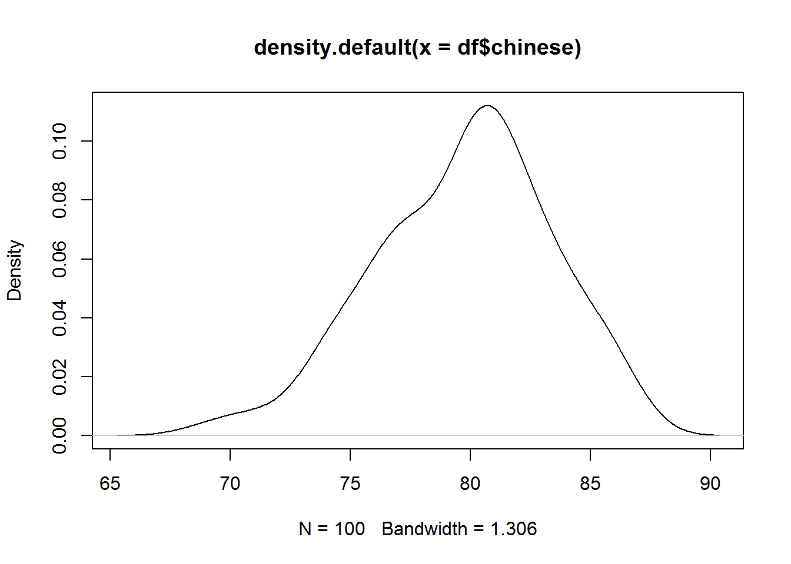
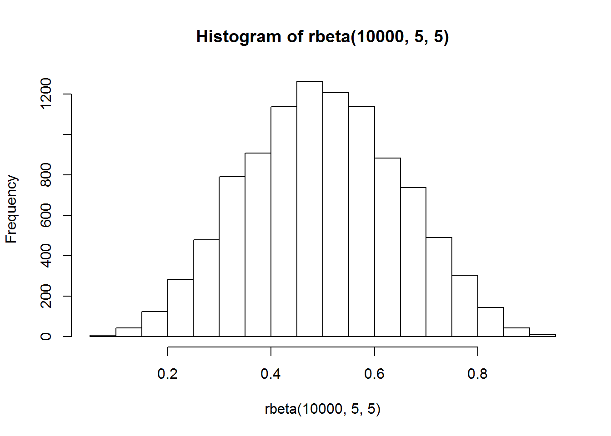

Chapter 4 Variation
Variation is the tendency of the values of a variable to change from measurement to measurement. (Wickham & Grolemund)
4.1 Categorical variable
The best way to characterizing categorical variables is via the frequency. The frequency is the number of times a particular value for a variable (data item) has been observed to occur.
How can we measure frequency?
The frequency of a value can be expressed in different ways, depending on the purpose required.
The absolute frequency describes the number of times a particular value for a variable (data item) has been observed to occur. Or simply put, counts.
A relative frequency describes the number of times a particular value for a variable (data item) has been observed to occur in relation to the total number of values for that variable.It is calculated by dividing the absolute frequency by the total number of values for the variable.
Ratios, rates, proportions and percentages are different ways of expressing relative frequencies.
- A ratiocompares the frequency of one value for a variable with another value for the variable. The first value identified in a ratio must be to the left of the colon (:) and the second value must be to the right of the colon (1st value : 2nd value).
For example, in a total of 20 coin tosses where there are 12 heads and 8 tails, the ratio of heads to tails is 12:8. Alternatively, the ratio of tails to heads is 8:12.
- A rate is a measurement of one value for a variable in relation to another measured quantity.
For example, in a total of 20 coin tosses where there are 12 heads and 8 tails, the rate is 12 heads per 20 coin tosses. Alternatively, the rate is 8 tails per 20 coin tosses.
- A proportion describes the share of one value for a variable in relation to a whole.It is calculated by dividing the number of times a particular value for a variable has been observed, by the total number of values in the population.
For example, in a total of 20 coin tosses where there are 12 heads and 8 tails, the proportion of heads is 0.6 (12 divided by 20). Alternatively, the proportion of tails is 0.4 (8 divided by 20).
- A percentage expresses a value for a variable in relation to a whole population as a fraction of one hundred. The percentage total of an entire dataset should always add up to 100, as 100% represents the total, it is equal to the ‘whole’. A percentage is calculated by dividing the number of times a particular value for a variable has been observed, by the total number of observations in the population, then multiplying this number by 100.
For example, in a total of 20 coin tosses where there are 12 heads and 8 tails, the percentage of heads is 60% (12 divided by 20, multiplied by 100). Alternatively, the percentage of tails is 40% (8 divided by 20, multiplied by 100). (ABS)
Frequency distributions are visual displays that organise and present frequency counts so that the information can be interpreted more easily.
How do we show a frequency distribution?
A frequency distribution of data can be shown in a table or graph. Some common methods of showing frequency distributions include frequency tables, bar charts or histograms.
Frequency Tables
A frequency table is a simple way to display the number of occurrences of a particular value or characteristic.
library(tidyverse)## -- Attaching packages ----------------------- tidyverse 1.2.1 --## v ggplot2 3.1.0 v purrr 0.3.2
## v tibble 2.1.1 v dplyr 0.8.0.1
## v tidyr 0.8.3 v stringr 1.4.0
## v readr 1.3.1 v forcats 0.4.0## -- Conflicts -------------------------- tidyverse_conflicts() --
## x dplyr::filter() masks stats::filter()
## x dplyr::lag() masks stats::lag()summary(diamonds)## carat cut color clarity
## Min. :0.2000 Fair : 1610 D: 6775 SI1 :13065
## 1st Qu.:0.4000 Good : 4906 E: 9797 VS2 :12258
## Median :0.7000 Very Good:12082 F: 9542 SI2 : 9194
## Mean :0.7979 Premium :13791 G:11292 VS1 : 8171
## 3rd Qu.:1.0400 Ideal :21551 H: 8304 VVS2 : 5066
## Max. :5.0100 I: 5422 VVS1 : 3655
## J: 2808 (Other): 2531
## depth table price x
## Min. :43.00 Min. :43.00 Min. : 326 Min. : 0.000
## 1st Qu.:61.00 1st Qu.:56.00 1st Qu.: 950 1st Qu.: 4.710
## Median :61.80 Median :57.00 Median : 2401 Median : 5.700
## Mean :61.75 Mean :57.46 Mean : 3933 Mean : 5.731
## 3rd Qu.:62.50 3rd Qu.:59.00 3rd Qu.: 5324 3rd Qu.: 6.540
## Max. :79.00 Max. :95.00 Max. :18823 Max. :10.740
##
## y z
## Min. : 0.000 Min. : 0.000
## 1st Qu.: 4.720 1st Qu.: 2.910
## Median : 5.710 Median : 3.530
## Mean : 5.735 Mean : 3.539
## 3rd Qu.: 6.540 3rd Qu.: 4.040
## Max. :58.900 Max. :31.800
## str(diamonds)## Classes 'tbl_df', 'tbl' and 'data.frame': 53940 obs. of 10 variables:
## $ carat : num 0.23 0.21 0.23 0.29 0.31 0.24 0.24 0.26 0.22 0.23 ...
## $ cut : Ord.factor w/ 5 levels "Fair"<"Good"<..: 5 4 2 4 2 3 3 3 1 3 ...
## $ color : Ord.factor w/ 7 levels "D"<"E"<"F"<"G"<..: 2 2 2 6 7 7 6 5 2 5 ...
## $ clarity: Ord.factor w/ 8 levels "I1"<"SI2"<"SI1"<..: 2 3 5 4 2 6 7 3 4 5 ...
## $ depth : num 61.5 59.8 56.9 62.4 63.3 62.8 62.3 61.9 65.1 59.4 ...
## $ table : num 55 61 65 58 58 57 57 55 61 61 ...
## $ price : int 326 326 327 334 335 336 336 337 337 338 ...
## $ x : num 3.95 3.89 4.05 4.2 4.34 3.94 3.95 4.07 3.87 4 ...
## $ y : num 3.98 3.84 4.07 4.23 4.35 3.96 3.98 4.11 3.78 4.05 ...
## $ z : num 2.43 2.31 2.31 2.63 2.75 2.48 2.47 2.53 2.49 2.39 ...library(Hmisc)## Loading required package: lattice## Loading required package: survival## Loading required package: Formula##
## Attaching package: 'Hmisc'## The following objects are masked from 'package:dplyr':
##
## src, summarize## The following objects are masked from 'package:base':
##
## format.pval, unitsdescribe(diamonds)## diamonds
##
## 10 Variables 53940 Observations
## ---------------------------------------------------------------------------
## carat
## n missing distinct Info Mean Gmd .05 .10
## 53940 0 273 0.999 0.7979 0.5122 0.30 0.31
## .25 .50 .75 .90 .95
## 0.40 0.70 1.04 1.51 1.70
##
## lowest : 0.20 0.21 0.22 0.23 0.24, highest: 4.00 4.01 4.13 4.50 5.01
## ---------------------------------------------------------------------------
## cut
## n missing distinct
## 53940 0 5
##
## Value Fair Good Very Good Premium Ideal
## Frequency 1610 4906 12082 13791 21551
## Proportion 0.030 0.091 0.224 0.256 0.400
## ---------------------------------------------------------------------------
## color
## n missing distinct
## 53940 0 7
##
## Value D E F G H I J
## Frequency 6775 9797 9542 11292 8304 5422 2808
## Proportion 0.126 0.182 0.177 0.209 0.154 0.101 0.052
## ---------------------------------------------------------------------------
## clarity
## n missing distinct
## 53940 0 8
##
## Value I1 SI2 SI1 VS2 VS1 VVS2 VVS1 IF
## Frequency 741 9194 13065 12258 8171 5066 3655 1790
## Proportion 0.014 0.170 0.242 0.227 0.151 0.094 0.068 0.033
## ---------------------------------------------------------------------------
## depth
## n missing distinct Info Mean Gmd .05 .10
## 53940 0 184 0.999 61.75 1.515 59.3 60.0
## .25 .50 .75 .90 .95
## 61.0 61.8 62.5 63.3 63.8
##
## lowest : 43.0 44.0 50.8 51.0 52.2, highest: 72.2 72.9 73.6 78.2 79.0
## ---------------------------------------------------------------------------
## table
## n missing distinct Info Mean Gmd .05 .10
## 53940 0 127 0.98 57.46 2.448 54 55
## .25 .50 .75 .90 .95
## 56 57 59 60 61
##
## lowest : 43.0 44.0 49.0 50.0 50.1, highest: 71.0 73.0 76.0 79.0 95.0
## ---------------------------------------------------------------------------
## price
## n missing distinct Info Mean Gmd .05 .10
## 53940 0 11602 1 3933 4012 544 646
## .25 .50 .75 .90 .95
## 950 2401 5324 9821 13107
##
## lowest : 326 327 334 335 336, highest: 18803 18804 18806 18818 18823
## ---------------------------------------------------------------------------
## x
## n missing distinct Info Mean Gmd .05 .10
## 53940 0 554 1 5.731 1.276 4.29 4.36
## .25 .50 .75 .90 .95
## 4.71 5.70 6.54 7.31 7.66
##
## lowest : 0.00 3.73 3.74 3.76 3.77, highest: 10.01 10.02 10.14 10.23 10.74
## ---------------------------------------------------------------------------
## y
## n missing distinct Info Mean Gmd .05 .10
## 53940 0 552 1 5.735 1.269 4.30 4.36
## .25 .50 .75 .90 .95
## 4.72 5.71 6.54 7.30 7.65
##
## Value 0.0 3.5 4.0 4.5 5.0 5.5 6.0 6.5 7.0 7.5
## Frequency 7 5 1731 12305 7817 5994 6742 9260 4298 3402
## Proportion 0.000 0.000 0.032 0.228 0.145 0.111 0.125 0.172 0.080 0.063
##
## Value 8.0 8.5 9.0 9.5 10.0 10.5 32.0 59.0
## Frequency 1635 652 69 14 6 1 1 1
## Proportion 0.030 0.012 0.001 0.000 0.000 0.000 0.000 0.000
## ---------------------------------------------------------------------------
## z
## n missing distinct Info Mean Gmd .05 .10
## 53940 0 375 1 3.539 0.7901 2.65 2.69
## .25 .50 .75 .90 .95
## 2.91 3.53 4.04 4.52 4.73
##
## Value 0.0 1.0 1.5 2.0 2.5 3.0 3.5 4.0 4.5 5.0
## Frequency 20 1 2 3 8807 13809 9474 13682 5525 2352
## Proportion 0.000 0.000 0.000 0.000 0.163 0.256 0.176 0.254 0.102 0.044
##
## Value 5.5 6.0 6.5 7.0 8.0 32.0
## Frequency 237 20 5 1 1 1
## Proportion 0.004 0.000 0.000 0.000 0.000 0.000
## ---------------------------------------------------------------------------contents(diamonds)##
## Data frame:diamonds 53940 observations and 10 variables Maximum # NAs:0
##
##
## Levels Class Storage
## carat double
## cut 5 ordered integer
## color 7 ordered integer
## clarity 8 ordered integer
## depth double
## table double
## price integer
## x double
## y double
## z double
##
## +--------+---------------------------------+
## |Variable|Levels |
## +--------+---------------------------------+
## | cut |Fair,Good,Very Good,Premium,Ideal|
## +--------+---------------------------------+
## | color |D,E,F,G,H,I,J |
## +--------+---------------------------------+
## | clarity|I1,SI2,SI1,VS2,VS1,VVS2,VVS1,IF |
## +--------+---------------------------------+Categorical variables are usually stored as factors or characters. You can use count() function or bar chart to explore the distribution.
A bar chart is a type of graph in which each column (plotted either vertically or horizontally) represents a categorical variable or a discrete ungrouped numeric variable. It is used to compare the frequency (count) for a category or characteristic with another category or characteristic.(ABS)
How to interprate:
In a bar chart, the bar height (if vertical) or length (if horizontal) shows the frequency for each category or characteristic.
The distribution of the dataset is not important because the columns each represent an individual category or characteristic rather than intervals for a continuous measurement. Therefore, gaps are included between each bar and each bar can be arranged in any order without affecting the data.
count(diamonds, cut)## # A tibble: 5 x 2
## cut n
## <ord> <int>
## 1 Fair 1610
## 2 Good 4906
## 3 Very Good 12082
## 4 Premium 13791
## 5 Ideal 21551count(diamonds, color)## # A tibble: 7 x 2
## color n
## <ord> <int>
## 1 D 6775
## 2 E 9797
## 3 F 9542
## 4 G 11292
## 5 H 8304
## 6 I 5422
## 7 J 2808ggplot(diamonds)+
geom_bar(aes(x = cut))
ggplot(diamonds)+
geom_bar(aes(x = color))Try this with clarity!
library(languageR)##
## Attaching package: 'languageR'## The following object is masked _by_ '.GlobalEnv':
##
## englishsummary(lexdec)## Subject RT Trial Sex NativeLanguage
## A1 : 79 Min. :5.829 Min. : 23 F:1106 English:948
## A2 : 79 1st Qu.:6.215 1st Qu.: 64 M: 553 Other :711
## A3 : 79 Median :6.346 Median :106
## C : 79 Mean :6.385 Mean :105
## D : 79 3rd Qu.:6.502 3rd Qu.:146
## I : 79 Max. :7.587 Max. :185
## (Other):1185
## Correct PrevType PrevCorrect Word
## correct :1594 nonword:855 correct :1542 almond : 21
## incorrect: 65 word :804 incorrect: 117 ant : 21
## apple : 21
## apricot : 21
## asparagus: 21
## avocado : 21
## (Other) :1533
## Frequency FamilySize SynsetCount Length
## Min. :1.792 Min. :0.0000 Min. :0.6931 Min. : 3.000
## 1st Qu.:3.951 1st Qu.:0.0000 1st Qu.:1.0986 1st Qu.: 5.000
## Median :4.754 Median :0.0000 Median :1.0986 Median : 6.000
## Mean :4.751 Mean :0.7028 Mean :1.3154 Mean : 5.911
## 3rd Qu.:5.652 3rd Qu.:1.0986 3rd Qu.:1.6094 3rd Qu.: 7.000
## Max. :7.772 Max. :3.3322 Max. :2.3026 Max. :10.000
##
## Class FreqSingular FreqPlural DerivEntropy
## animal:924 Min. : 4.0 Min. : 0.0 Min. :0.0000
## plant :735 1st Qu.: 23.0 1st Qu.: 19.0 1st Qu.:0.0000
## Median : 69.0 Median : 49.0 Median :0.0370
## Mean : 132.1 Mean :109.7 Mean :0.3856
## 3rd Qu.: 146.0 3rd Qu.:132.0 3rd Qu.:0.6845
## Max. :1518.0 Max. :854.0 Max. :2.2641
##
## Complex rInfl meanRT SubjFreq
## complex: 210 Min. :-1.3437 Min. :6.245 Min. :2.000
## simplex:1449 1st Qu.:-0.3023 1st Qu.:6.322 1st Qu.:3.160
## Median : 0.1900 Median :6.364 Median :3.880
## Mean : 0.2845 Mean :6.379 Mean :3.911
## 3rd Qu.: 0.6385 3rd Qu.:6.420 3rd Qu.:4.680
## Max. : 4.4427 Max. :6.621 Max. :6.040
##
## meanSize meanWeight BNCw BNCc
## Min. :1.323 Min. :0.8244 Min. : 0.02229 Min. : 0.0000
## 1st Qu.:1.890 1st Qu.:1.4590 1st Qu.: 1.64921 1st Qu.: 0.1625
## Median :3.099 Median :2.7558 Median : 3.32071 Median : 0.6500
## Mean :2.891 Mean :2.5516 Mean : 7.37800 Mean : 5.0351
## 3rd Qu.:3.711 3rd Qu.:3.4178 3rd Qu.: 7.10943 3rd Qu.: 2.9248
## Max. :4.819 Max. :4.7138 Max. :79.17324 Max. :83.1949
##
## BNCd BNCcRatio BNCdRatio
## Min. : 0.000 Min. :0.00000 Min. :0.0000
## 1st Qu.: 1.188 1st Qu.:0.09673 1st Qu.:0.5551
## Median : 3.800 Median :0.27341 Median :0.9349
## Mean : 12.995 Mean :0.45834 Mean :1.5428
## 3rd Qu.: 10.451 3rd Qu.:0.55550 3rd Qu.:2.1315
## Max. :241.561 Max. :8.29545 Max. :6.3458
## summary(iris)## Sepal.Length Sepal.Width Petal.Length Petal.Width
## Min. :4.300 Min. :2.000 Min. :1.000 Min. :0.100
## 1st Qu.:5.100 1st Qu.:2.800 1st Qu.:1.600 1st Qu.:0.300
## Median :5.800 Median :3.000 Median :4.350 Median :1.300
## Mean :5.843 Mean :3.057 Mean :3.758 Mean :1.199
## 3rd Qu.:6.400 3rd Qu.:3.300 3rd Qu.:5.100 3rd Qu.:1.800
## Max. :7.900 Max. :4.400 Max. :6.900 Max. :2.500
## Species
## setosa :50
## versicolor:50
## virginica :50
##
##
## 4.2 Continous variable
A continuous variable can take any of an infinite set of ordered values. You can use a histogram and other descriptive stats to characterize its distribution.
A histogram is a type of graph in which each column represents a numeric variable, in particular that which is continuous and/or grouped.It shows the distribution of all observations in a quantitative dataset. It is useful for describing the shape, centre and spread to better understand the distribution of the dataset.
How to interprate:
The height of the column shows the frequency for a specific range of values.
Columns are usually of equal width, however a histogram may show data using unequal ranges (intervals) and therefore have columns of unequal width.
The values represented by each column must be mutually exclusive and exhaustive. Therefore, there are no spaces between columns and each observation can only ever belong in one column.
It is important that there is no ambiguity in the labelling of the intervals on the x-axis for continuous or grouped data (e.g. 0 to less than 10, 10 to less than 20, 20 to less than 30).
# histogram
ggplot(diamonds)+
geom_histogram(aes(carat), binwidth = 0.1)
# histogram zoom in y axsis
ggplot(diamonds)+
geom_histogram(aes(carat), binwidth = 0.1)+
coord_cartesian(ylim = c(0,50))# histogram zoom in x axsis
ggplot(diamonds[ which(diamonds$carat < 3), ])+
geom_histogram(aes(carat), binwidth = 0.1)diamonds%>%
filter(carat <3)%>%
ggplot()+
geom_histogram(aes(carat), binwidth = 0.1)# density plot
ggplot(diamonds,aes(carat))+
geom_density(kernel = "gaussian")# area
ggplot(diamonds,aes(carat))+
geom_area(stat = "bin")## `stat_bin()` using `bins = 30`. Pick better value with `binwidth`.# dotplot
ggplot(diamonds,aes(carat))+
geom_dotplot()## `stat_bindot()` using `bins = 30`. Pick better value with `binwidth`.# freqpoly
ggplot(diamonds, aes(carat))+
geom_freqpoly()## `stat_bin()` using `bins = 30`. Pick better value with `binwidth`.4.2.1 Five-number summary
The five-number summary is a set of descriptive statistics that provide information about a dataset. It consists of the five most important sample percentiles:
the sample minimum (smallest observation)
the lower quartile or first quartile
the median (the middle value)
the upper quartile or third quartile
the sample maximum (largest observation)
The five-number summary provides a concise summary of the distribution of the observations. Reporting five numbers avoids the need to decide on the most appropriate summary statistic. The five-number summary gives information about the location (from the median), spread (from the quartiles) and range (from the sample minimum and maximum) of the observations. Since it reports order statistics (rather than, say, the mean) the five-number summary is appropriate for ordinal measurements, as well as interval and ratio measurements. (from wikipedia)
How to Find a Five-Number Summary:
Step 1: Put your numbers in ascending order (from smallest to largest). For this particular data set, the order is: > Example: 1,2,5,6,7,9,12,15,18,19,27.
Step 2: Find the minimum and maximum for your data set. Now that your numbers are in order, this should be easy to spot. In the example in step 1, the minimum (the smallest number) is 1 and the maximum (the largest number) is 27.
Step 3: Find the median. The median is the middle number. If you aren’t sure how to find the median, see: How to find the mean mode and median.
Step 4: Place parentheses around the numbers above and below the median.(This is not technically necessary, but it makes Q1 and Q3 easier to find). (1,2,5,6,7),9,(12,15,18,19,27).
Step 5: Find Q1 and Q3. Q1 can be thought of as a median in the lower half of the data, and Q3 can be thought of as a median for the upper half of data. (1,2,5,6,7), 9, ( 12,15,18,19,27).
-Step 6: Write down your summary found in the above steps. minimum=1, Q1 =5, median=9, Q3=18, and maximum=27.
summary(diamonds$carat)## Min. 1st Qu. Median Mean 3rd Qu. Max.
## 0.2000 0.4000 0.7000 0.7979 1.0400 5.01004.2.2 Boxplot & violin plot
It is possible to quickly compare several sets of observations by comparing their five-number summaries, which can be represented graphically using a boxplot.
In descriptive statistics, a boxplot is a method for graphically depicting groups of numerical data through their quartiles.
Boxplots may also have lines extending vertically from the boxes (whiskers) indicating variability outside the upper and lower quartiles, hence the terms box-and-whisker plot and box-and-whisker diagram.
Outliers may be plotted as individual points.
The spacings between the different parts of the box indicate the degree of dispersion (spread) and skewness in the data, and show outliers.
Box plots can be drawn either horizontally or vertically. Box plots received their name from the box in the middle.
box plots typically graph six data points:
The lowest value, excluding outliers
The first quartile (this is the 25th percentile, or median of all the numbers below the median)
The median value (equivalent to the 50th percentile)
The third quartile (this is the 75th percentile, or median of all the numbers above the median)
The highest value, excluding outliers
Outliers
knitr::include_graphics("img/whatsaboxplot.png")
Figure 4.1: Boxplot
#source:https://mode.com/blog/how-to-make-box-and-whisker-plot-sql# r base function
boxplot(diamonds$carat)
#ggplot version
ggplot(diamonds, aes(x="carat", y=carat))+
geom_boxplot()A violin plot is a method of plotting numeric data. It is similar to a boxplot, with the addition of a rotated kernel density plot on each side.
Violin plots are similar to boxplots. Typically a violin plot will include all the data that is in a box plot: a marker for the median of the data; a box or marker indicating the interquartile range; and possibly all sample points, if the number of samples is not too high.
knitr::include_graphics("img/violinplot.png")Figure 4.2: Violin plot
#source:https://mode.com/blog/violin-plot-examplesSo a violin plot is more informative than a plain box plot. While a box plot only shows summary statistics such as mean/median and interquartile ranges, the violin plot shows the full distribution of the data. The difference is particularly useful when the data distribution is multimodal (more than one peak). In this case a violin plot shows the presence of different peaks, their position and relative amplitude.
#violin plot
ggplot(diamonds, aes(x="carat", y=carat))+
geom_violin()ggplot(diamonds, aes(x="price", y=price))+
geom_violin()
4.2.3 QQ Plots
QQ Plots (Quantile-Quantile plots) are plots of two quantiles against each other. A quantile is a fraction where certain values fall below that quantile. For example, the median is a quantile where 50% of the data fall below that point and 50% lie above it. The purpose of QQ plots is to find out if two sets of data come from the same distribution.
A 45 degree angle is plotted on the Q Q plot; if the two data sets come from a common distribution, the points will fall on that reference line.(from Wikipedia)
# Solution 1
qplot(sample = carat, data = diamonds)# solution 2
ggplot(diamonds)+
geom_qq(aes(sample = carat))+
geom_qq_line(aes(sample = carat)) ### The measures of central tendency? (ABS)
### The measures of central tendency? (ABS)
A measure of central tendency (also referred to as measures of centre or central location) is a summary measure that attempts to describe a whole set of data with a single value that represents the middle or centre of its distribution.
There are three main measures of central tendency: the mode, the median and the mean. Each of these measures describes a different indication of the typical or central value in the distribution.
- The mode is the most commonly occurring value in a distribution.
Consider this dataset showing the retirement age of 11 people, in whole years:
54, 54, 54, 55, 56, 57, 57, 58, 58, 60, 60
Advantage of the mode:
The mode has an advantage over the median and the mean as it can be found for both numerical and categorical (non-numerical) data.
Limitations of the mode:
In some distributions, the mode may not reflect the centre of the distribution very well.
it is easy to see that the centre of the distribution is 57 years, but the mode is lower, at 54 years. 54, 54, 54, 55, 56, 57, 57, 58, 58, 60, 60
more than one mode for the same distribution of data, (bi-modal, or multi-modal). The presence of more than one mode can limit the ability of the mode in describing the centre or typical value of the distribution because a single value to describe the centre cannot be identified.
In some cases, particularly where the data are continuous, the distribution may have no mode at all (i.e. if all values are different).In cases such as these, it may be better to consider using the median or mean, or group the data in to appropriate intervals, and find the modal class.
- The median is the middle value in distribution when the values are arranged in ascending or descending order.
The median divides the distribution in half (there are 50% of observations on either side of the median value). In a distribution with an odd number of observations, the median value is the middle value.
54, 54, 54, 55, 56, 57, 57, 58, 58, 60, 60
When the distribution has an even number of observations, the median value is the mean of the two middle values. In the following distribution, the two middle values are 56 and 57, therefore the median equals 56.5 years:
52, 54, 54, 54, 55, 56, 57, 57, 58, 58, 60, 60
Advantage of the median:
The median is less affected by outliers and skewed data than the mean, and is usually the preferred measure of central tendency when the distribution is not symmetrical.
Limitation of the median:
The median cannot be identified for categorical nominal data, as it cannot be logically ordered.
- The mean is the sum of the value of each observation in a dataset divided by the number of observations. This is also known as the arithmetic average.
Looking at the retirement age distribution again:
54, 54, 54, 55, 56, 57, 57, 58, 58, 60, 60
The mean is 56.6 years.
Advantage of the mean:
The mean can be used for both continuous and discrete numeric data.
Limitations of the mean:
The mean cannot be calculated for categorical data, as the values cannot be summed.
As the mean includes every value in the distribution the mean is influenced by outliers and skewed distributions.
What else do I need to know about the mean?
The population mean is indicated by the Greek symbol µ (pronounced ‘mu’). When the mean is calculated on a distribution from a sample it is indicated by the symbol x̅ (pronounced X-bar).
4.2.4 How does the shape of a distribution influence the Measures of Central Tendency?
4.2.4.1 Symmetrical distributions:
When a distribution is symmetrical, the mode, median and mean are all in the middle of the distribution. The following graph shows a larger retirement age dataset with a distribution which is symmetrical. The mode, median and mean all equal 58 years.
hist(rbeta(10000,5,2))
hist(rbeta(10000,2,5))hist(rbeta(10000,5,5))
knitr::include_graphics("img/normal.jpg")
Figure 4.3: distribution
knitr::include_graphics("img/right.jpg")
Figure 4.3: distribution
knitr::include_graphics("img/left.jpg")
Figure 4.3: distribution
#source:https://www.abs.gov.au/websitedbs/a3121120.nsf/home/statistical+language+-+measures+of+central+tendency4.2.4.2 Skewed distributions:
When a distribution is skewed the mode remains the most commonly occurring value, the median remains the middle value in the distribution, but the mean is generally ‘pulled’ in the direction of the tails. In a skewed distribution, the median is often a preferred measure of central tendency, as the mean is not usually in the middle of the distribution.
A distribution is said to be positively or right skewed when the tail on the right side of the distribution is longer than the left side. In a positively skewed distribution it is common for the mean to be ‘pulled’ toward the right tail of the distribution. Although there are exceptions to this rule, generally, most of the values, including the median value, tend to be less than the mean value.
The following graph shows a larger retirement age data set with a distribution which is right skewed. The data has been grouped into classes, as the variable being measured (retirement age) is continuous. The mode is 54 years, the modal class is 54-56 years, the median is 56 years and the mean is 57.2 years.
A distribution is said to be negatively or left skewed when the tail on the left side of the distribution is longer than the right side. In a negatively skewed distribution, it is common for the mean to be ‘pulled’ toward the left tail of the distribution. Although there are exceptions to this rule, generally, most of the values, including the median value, tend to be greater than the mean value.
The following graph shows a larger retirement age dataset with a distribution which left skewed. The mode is 65 years, the modal class is 63-65 years, the median is 63 years and the mean is 61.8 years.
4.2.5 Measures of Spread
Summarising the dataset can help us understand the data, especially when the dataset is large. As discussed in the Measures of Central Tendency page, the mode, median, and mean summarise the data into a single value that is typical or representative of all the values in the dataset, but this is only part of the ‘picture’ that summarises a dataset. Measures of spread summarise the data in a way that shows how scattered the values are and how much they differ from the mean value.(ABS)
Measures of spread describe how similar or varied the set of observed values are for a particular variable (data item). Measures of spread include the range, quartiles and the interquartile range, variance and standard deviation.(ABS)
The spread of the values can be measured for quantitative data, as the variables are numeric and can be arranged into a logical order with a low end value and a high end value.(ABS)
4, 5, 5, 5, 6, 6, 6, 6, 7, 7, 7, 8 1, 2, 3, 4, 5, 6, 6, 7, 8, 9, 10, 11
the measures of central tendency for both datasets are the same.However, if we look at the spread of the values, we can see that Dataset B is more dispersed than Dataset A. Used together, the measures of central tendency and measures of spread help us to better understand the data
dataset1 = c(4, 5, 5, 5, 6, 6, 6, 6, 7, 7, 7, 8)
dataset2 = c(1, 2, 3, 4, 5, 6, 6, 7, 8, 9, 10, 11)
dataset = data.frame(dataset1, dataset2)
dataset = gather(dataset, type, data)
ggplot(dataset, aes(data, fill = type)) + geom_bar(position=position_dodge())The range is the difference between the smallest value and the largest value in a dataset.
range(dataset1)## [1] 4 8range(dataset2)## [1] 1 11Quartiles divide an ordered dataset into four equal parts, and refer to the values of the point between the quarters. A dataset may also be divided into quintiles (five equal parts) or deciles (ten equal parts).
The lower quartile (Q1) is the point between the lowest 25% of values and the highest 75% of values. It is also called the 25th percentile.
The second quartile (Q2) is the middle of the data set. It is also called the 50th percentile, or the median.
The upper quartile (Q3) is the point between the lowest 75% and highest 25% of values. It is also called the 75th percentile.
The interquartile range (IQR) is the difference between the upper (Q3) and lower (Q1) quartiles, and describes the middle 50% of values when ordered from lowest to highest. The IQR is often seen as a better measure of spread than the range as it is not affected by outliers.
quantile(dataset1)## 0% 25% 50% 75% 100%
## 4 5 6 7 8quantile(dataset2)## 0% 25% 50% 75% 100%
## 1.00 3.75 6.00 8.25 11.00The variance and the standard deviation are measures of the spread of the data around the mean. They summarise how close each observed data value is to the mean value.
In datasets with a small spread all values are very close to the mean, resulting in a small variance and standard deviation. Where a dataset is more dispersed, values are spread further away from the mean, leading to a larger variance and standard deviation.
The smaller the variance and standard deviation, the more the mean value is indicative of the whole dataset. Therefore, if all values of a dataset are the same, the standard deviation and variance are zero.
The standard deviation of a normal distribution enables us to calculate confidence intervals. In a normal distribution, about 68% of the values are within one standard deviation either side of the mean and about 95% of the scores are within two standard deviations of the mean.
The standard deviation is the square root of the variance.
var(dataset1)## [1] 1.272727sqrt(var(dataset1))## [1] 1.128152sd(dataset1)## [1] 1.128152Confidence interval (Taken from Summary and Analysis of Extension Program Evaluation in R by Salvatore S. Mangiafico)
A confidence interval is a range in which it is estimated the true population value lies. A confidence interval is used to indicate how accurate a calculated statistic is likely to be. Confidence intervals can be calculated for a variety of statistics, such as the mean, median, or slope of a linear regression. This chapter will focus on confidences intervals for means.
Most of the statistics we use assume we are analyzing a sample which we are using to represent a larger population.
Statistics and parameters
When we calculate the sample mean, the result is a statistic. It’s an estimate of the population mean, but our calculated sample mean would vary depending on our sample. In theory, there is a mean for the population of interest, and we consider this population mean a parameter. Our goal in calculating the sample mean is estimating the population parameter.
Point estimates and confidence intervals Our sample mean is a point estimate for the population parameter. A point estimate is a useful approximation for the parameter, but considering the confidence interval for the estimate gives us more information.
As a definition of confidence intervals, if we were to sample the same population many times and calculated a sample mean and a 95% confidence interval each time, then 95% of those intervals would contain the actual population mean.
if we want to compare the means of two groups to see if they are statistically different, we will use a t-test, or similar test, calculate a p-value, and draw a conclusion. An alternative approach would be to construct 95% or 99% confidence intervals about the mean for each group. If the confidence intervals of the two means don’t overlap, we are justified in calling them statistically different.
Confidence intervals for means can be calculated by various methods.
The traditional method is the most commonly encountered, and is appropriate for normally distributed data or with large sample sizes. It produces an interval that is symmetric about the mean.For skewed data, confidence intervals by bootstrapping may be more reliable.For routine use, I recommend using bootstrapped confidence intervals, particularly the BCa or percentile methods.
The groupwiseMean function in the rcompanion package can produce confidence intervals both by traditional and bootstrap methods, for grouped and ungrouped data.
The data must be housed in a data frame. By default, the function reports confidence intervals by the traditional method.
In the groupwiseMean function, the measurement and grouping variables can be indicated with formula notation, with the measurement variable on the left side of the tilde (~), and grouping variables on the right.
The confidence level is indicated by, e.g., the conf = 0.95 argument. The digits option indicates the number of significant digits to which the output is rounded. Note that in the output, the means and other statistics are rounded to 3 significant figures.
#install.packages("rcompanion")
library(rcompanion)
dataset3 = data.frame(dataset1)
groupwiseMean(dataset1 ~ 1,
data = dataset3,
conf = 0.95,
digits = 3)## .id n Mean Conf.level Trad.lower Trad.upper
## 1 <NA> 12 6 0.95 5.28 6.72groupwiseMean(data ~ type,
data = dataset,
conf = 0.95,
digits = 3)## type n Mean Conf.level Trad.lower Trad.upper
## 1 dataset1 12 6 0.95 5.28 6.72
## 2 dataset2 12 6 0.95 3.99 8.01Bootstrapped means by group
In the groupwiseMean function, the type of confidence interval is requested by setting certain options to TRUE. These options are traditional, normal, basic, percentile and bca. The boot option reports an optional statistic, the mean by bootstrap. The R option indicates the number of iterations to calculate each bootstrap statistic.
groupwiseMean(data ~ type,
data = dataset,
conf = 0.95,
digits = 3,
R = 10000,
boot = TRUE,
traditional = FALSE,
normal = FALSE,
basic = FALSE,
percentile = FALSE,
bca = TRUE)## type n Mean Boot.mean Conf.level Bca.lower Bca.upper
## 1 dataset1 12 6 6.01 0.95 5.33 6.50
## 2 dataset2 12 6 6.00 0.95 4.17 7.584.2.6 Unusual values
unusual = diamonds %>%
filter(y < 3 | y > 20)%>%
arrange(y)
unusual## # A tibble: 9 x 10
## carat cut color clarity depth table price x y z
## <dbl> <ord> <ord> <ord> <dbl> <dbl> <int> <dbl> <dbl> <dbl>
## 1 1 Very Good H VS2 63.3 53 5139 0 0 0
## 2 1.14 Fair G VS1 57.5 67 6381 0 0 0
## 3 1.56 Ideal G VS2 62.2 54 12800 0 0 0
## 4 1.2 Premium D VVS1 62.1 59 15686 0 0 0
## 5 2.25 Premium H SI2 62.8 59 18034 0 0 0
## 6 0.71 Good F SI2 64.1 60 2130 0 0 0
## 7 0.71 Good F SI2 64.1 60 2130 0 0 0
## 8 0.51 Ideal E VS1 61.8 55 2075 5.15 31.8 5.12
## 9 2 Premium H SI2 58.9 57 12210 8.09 58.9 8.06# drop the entire row with the strange values
diamonds_new = diamonds%>%
filter(between(y,3,20))
head(arrange(diamonds_new,y))## # A tibble: 6 x 10
## carat cut color clarity depth table price x y z
## <dbl> <ord> <ord> <ord> <dbl> <dbl> <int> <dbl> <dbl> <dbl>
## 1 0.2 Premium D VS2 62.3 60 367 3.73 3.68 2.31
## 2 0.2 Premium F VS2 62.6 59 367 3.73 3.71 2.33
## 3 0.2 Very Good E VS2 63.4 59 367 3.74 3.71 2.36
## 4 0.2 Premium D VS2 61.7 60 367 3.77 3.72 2.31
## 5 0.2 Ideal E VS2 62.2 57 367 3.76 3.73 2.33
## 6 0.2 Premium E SI2 60.2 62 345 3.79 3.75 2.27# replace the unusual values with missing values
diamonds_replace = diamonds %>%
mutate(y2 = ifelse(y<3 | y> 20, NA, y))
head(arrange(diamonds_replace, y ))## # A tibble: 6 x 11
## carat cut color clarity depth table price x y z y2
## <dbl> <ord> <ord> <ord> <dbl> <dbl> <int> <dbl> <dbl> <dbl> <dbl>
## 1 1 Very Good H VS2 63.3 53 5139 0 0 0 NA
## 2 1.14 Fair G VS1 57.5 67 6381 0 0 0 NA
## 3 1.56 Ideal G VS2 62.2 54 12800 0 0 0 NA
## 4 1.2 Premium D VVS1 62.1 59 15686 0 0 0 NA
## 5 2.25 Premium H SI2 62.8 59 18034 0 0 0 NA
## 6 0.71 Good F SI2 64.1 60 2130 0 0 0 NA